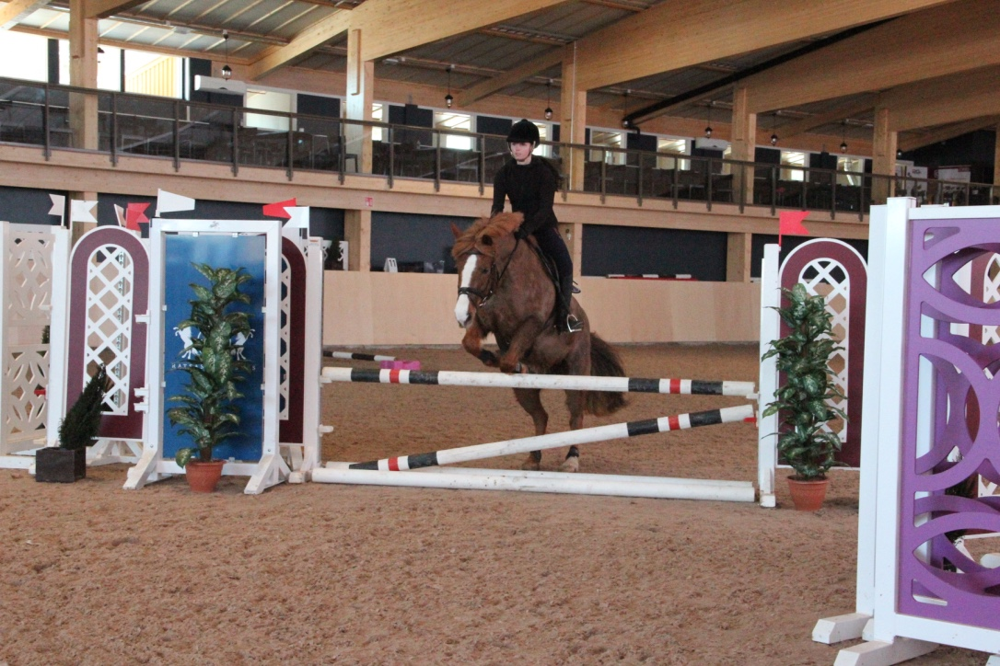
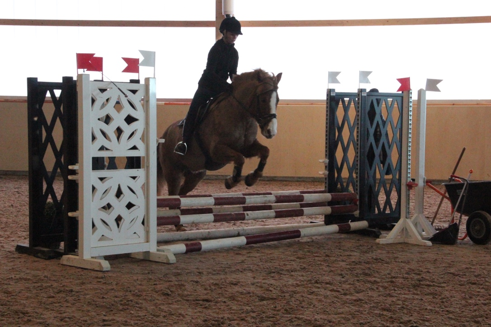

Esteratsastus
Esteratsastus on kilpailumuoto, jossa ratsukon eli hevosen ja ratsastajan tehtävänä on ylittää kilpailuradalle asetetut esteet virhepisteittä annetun ajan puitteissa.
Kilpailumuotona esteratsastus on Suomessa suosituin ratsastuksen lajeista. Siinä ratsukon yhteistyö punnitaan vaihtelevissa olosuhteissa radalla. Sen tehtävänä on ylittää kilpailuradalle asetetut esteet virhepisteittä mahdollisimman nopeasti, ja radalla testataan ratsastajan taitoa ja hevosen hyppykykyä, tottelevaisuutta, ketteryyttä ja nopeutta. Tulos määräytyy selkeästi virhepisteiden ja ajan perusteella.


Esterata voidaan rakentaa joko sisähalliin tai ulos hiekka- tai nurmikentälle. Rataan kuuluu kilpailuluokan vaikeusasteen mukaan 8-20 estettä, joista osa voi olla sarjaesteitä. Sarjaeste muodostuu kahdesta tai useammasta yksittäisesteestä, joiden välissä hevonen ottaa vain yhden tai kaksi laukka-askelta. Esteet on rakennettu siten, että ainakin niiden ylin osa on putoava. Ratojen suunnittelusta vastaa kilpailun ratamestari.
Estekorkeus vaihtelee kilpailuluokittain 60-160 cm:n välillä. Kilpailuharjoituksissa järjestetään myös puomiluokkia, ja erikoisluokissa esteet voivat olla korkeampiakin. Esteissä voi olla myös pituutta, kuitenkin enintään 2 m, paitsi vesiesteellä, joka saa olla 450 cm pitkä vaikean tason kilpailuissa.